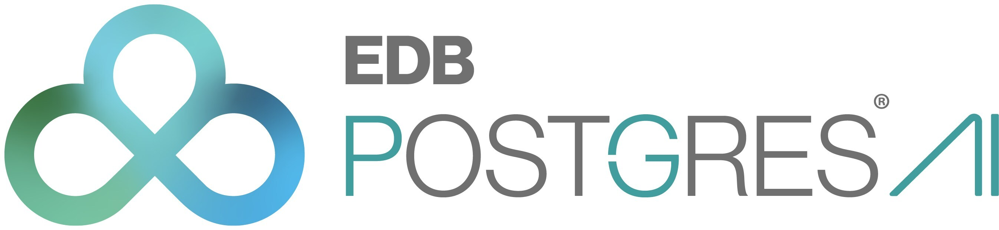

EDB Postgres AI: la couche data devient un levier d'IA souveraine
Le communiqué officiel EnterpriseDB du 31 mars 2026 positionne Postgres AI comme plateforme de données conçue pour l'ère agentique. Pour la souveraineté IA, le signal est important: la maîtrise du stockage, de la concurrence et de la gouvernance devient une condition d'exécution, pas un sujet secondaire.

1. Ce qui est annonce officiellement
EDB publie des résultats de benchmark tiers sur Postgres AI for WarehousePG, avec un focus sur la prévisibilité en forte concurrence et les coûts, tout en annonçant des nouveautés produit orientées workloads IA autonomes. La communication présente explicitement EDB comme un acteur "sovereign AI and data".
2. Pourquoi c'est structurant pour l'IA souveraine
Une stratégie souveraine ne se limite pas au modèle: elle dépend du contrôle de la couche data, des performances sous charge réelle et de la capacité à prouver les arbitrages coût/risque. Cette annonce renforce l'idée qu'une base PostgreSQL industrialisée peut devenir un socle de souveraineté opérationnelle pour l'IA.
3. Lecture opérationnelle pour une organisation
Les équipes IA, data platform et conformité doivent prioriser les cas d'usage où la gouvernance des données et la stabilité multi-utilisateurs sont critiques. L'enjeu est d'aligner architecture LLM, data warehouse et exigences de résidence/contrôle pour éviter une dépendance excessive aux plateformes opaques.
Lancer un diagnostic "LLM + plateforme data souveraine" pour identifier les charges IA qui doivent migrer vers une architecture gouvernable, auditée et économiquement prévisible.
Demarrer le cadrage